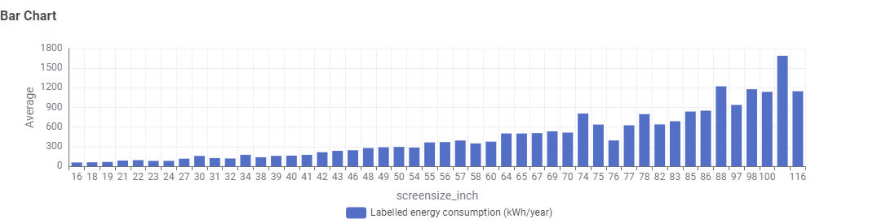
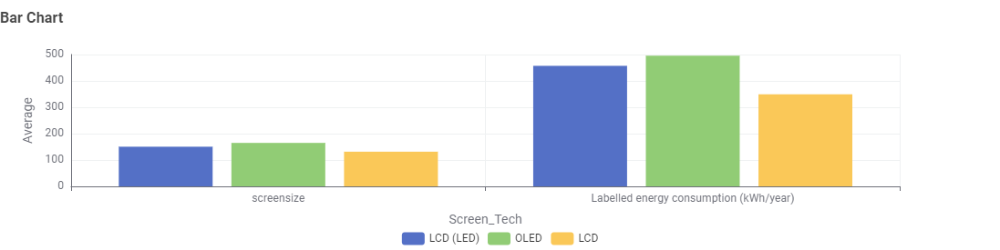
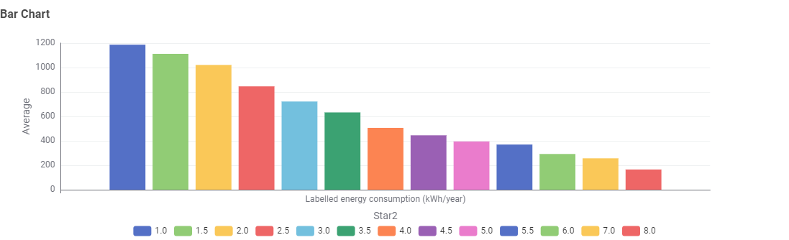

Everyday consumers
Shoppers comparing televisions who want a plain-English sense of how size and technology choices affect their power bill.
Data story · TV energy consumption
Televisions have grown larger and sharper every year, but few buyers stop to ask what that extra screen real estate costs in running power. This story walks through the TV energy consumption dataset to show how screen size, display technology and energy star ratings combine to shape a television's yearly running cost — and what that means for choosing a more efficient set.
Read the storyThree audiences shaped how this story is told, and what it emphasises.
Shoppers comparing televisions who want a plain-English sense of how size and technology choices affect their power bill.
Readers interested in broader trends in household energy consumption and where efficiency labelling is making the most difference.
People studying energy efficiency in consumer electronics who want a quick, visual summary before digging into the full dataset.
Three questions guide this story: how much does screen size matter, how much does display technology matter, and does an energy star rating actually predict lower running costs?
Across the dataset, average labelled energy consumption climbs steadily — and then sharply — as screen size increases. Sets in the 16"–30" range average well under 200 kWh/year, while sets 88" and above average over 1,000 kWh/year, with a couple of sizes topping 1,600 kWh/year. For a shopper choosing between "big enough" and "as big as possible," this is the single largest factor in the final energy bill.

Size alone doesn't tell the whole story. In the dataset, sets grouped by
Screen_Tech show OLED panels carrying the highest average labelled
energy consumption, LCD (LED) close behind, and standard LCD noticeably lower —
a result of how each technology lights individual pixels. Two televisions of a
similar size can still land on quite different running costs depending on the
panel technology underneath.

Encouragingly, the energy star rating printed on the box lines up closely with actual outcomes: average labelled energy consumption falls steadily from around 1,190 kWh/year at the lowest ratings down to around 160 kWh/year at the highest — a nearly seven-fold difference across the rating scale. For shoppers, the star rating is a genuinely reliable shortcut for comparing running costs at a glance.

For consumers, the most efficient upgrade path is: pick the smallest screen size that comfortably suits the room, then compare energy star ratings within that size before choosing between LCD, LCD (LED) and OLED. For regulators and researchers, the data suggests star ratings remain a meaningful signal worth keeping visible at the point of sale, particularly as screen sizes continue to trend upward.
This story is based on the TV Energy Consumption dataset provided as part of the course materials. Figures shown in the charts above are illustrative summaries drawn from that dataset for storytelling purposes.
Television model and energy consumption data supplied as part of the course materials, covering power usage, screen size, display technology and efficiency ratings.
The dataset was cleaned of missing or inconsistent values, and relevant attributes were summarised into the size, technology and rating groupings shown above.
The dataset contains no personal or sensitive information — only product specifications and energy consumption figures.
The dataset may not cover every model on the market, some entries may be outdated, and real-world power draw depends on individual usage and picture settings.
See the project About Us page for the team, or try the energy calculator to estimate a specific set's running cost.